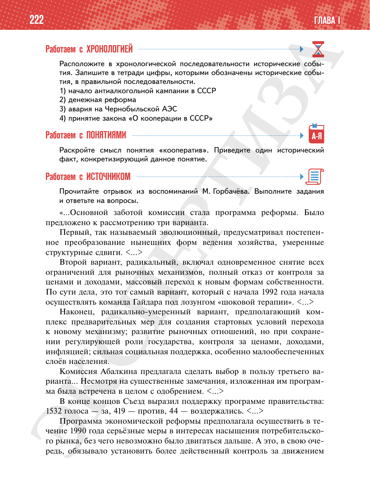

⌂
Мединский.нет
Последнее обновление: 16.08.2026 18:31
Мединский.нет
›
История России. 11 класс. Базовый уровень
›
Глава I. СССР в 1945—1991 гг.
›
§ 19. Социально-экономическое развитие СССР в 1985—1991 гг.
›
стр. 223

← стр. 222
Оглавление
стр. 224 →
×